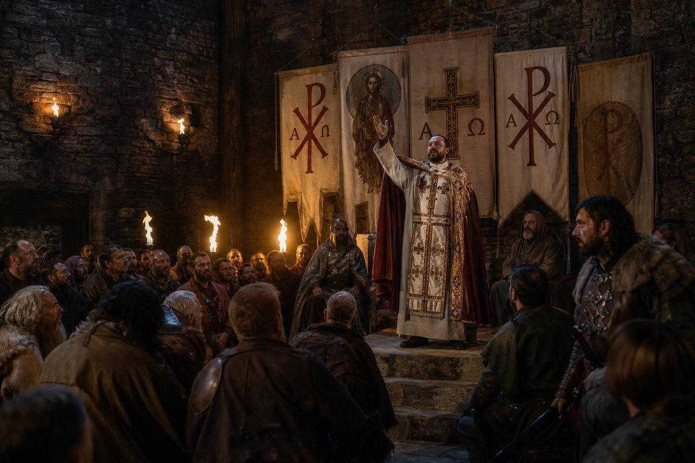
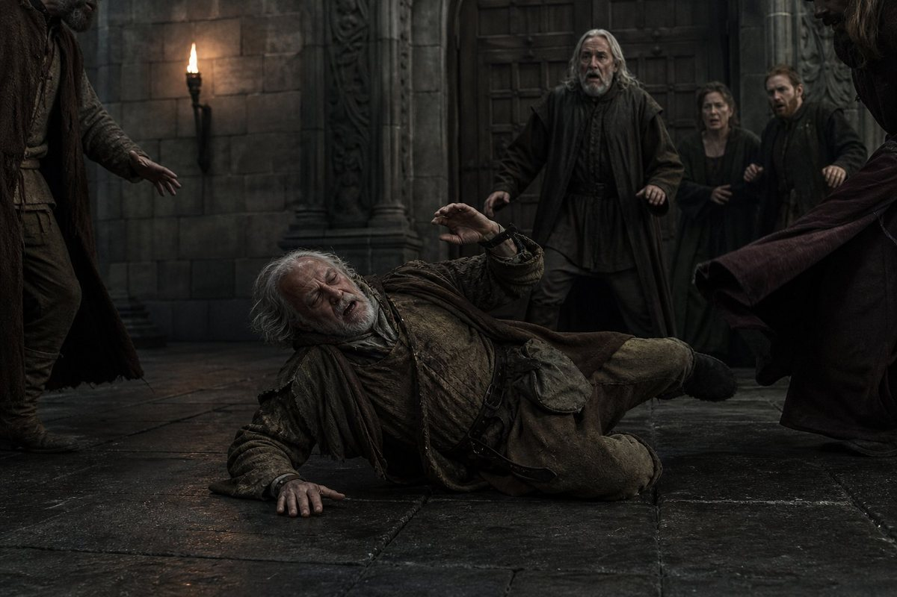
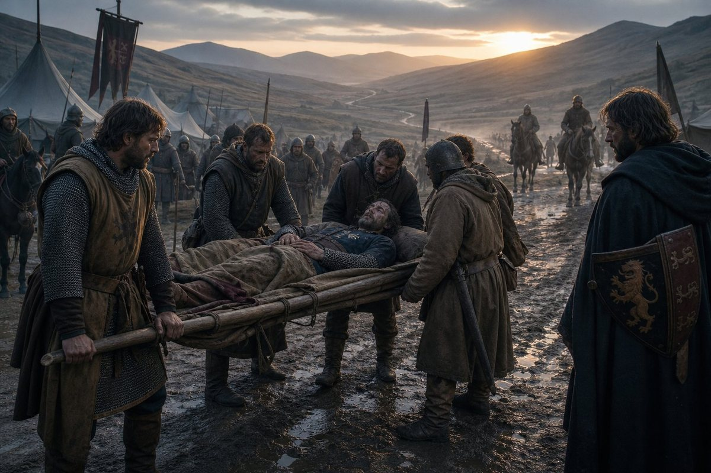
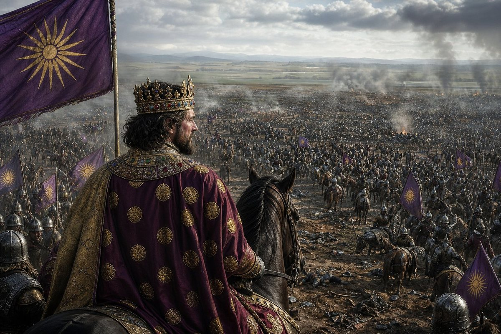
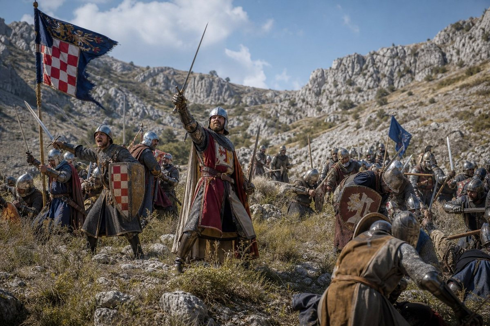
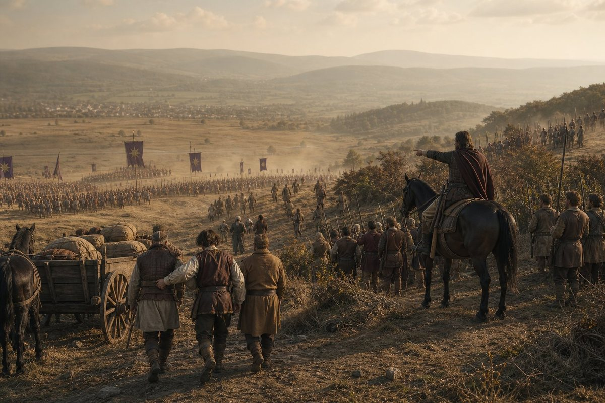
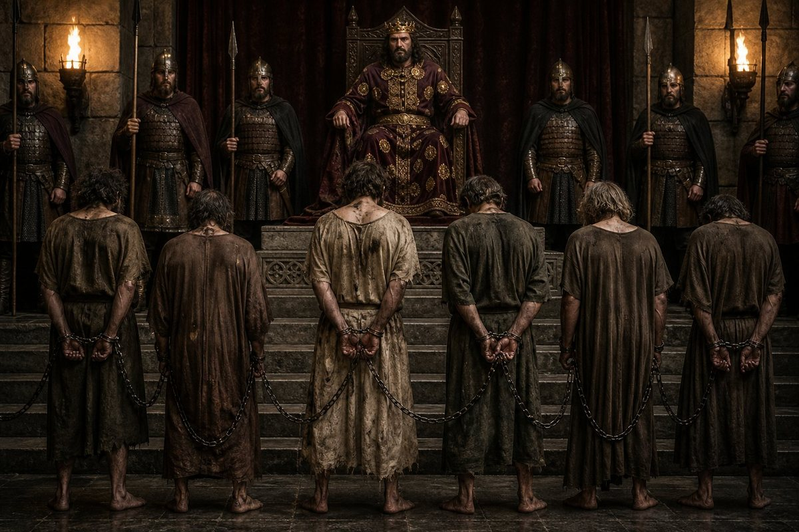
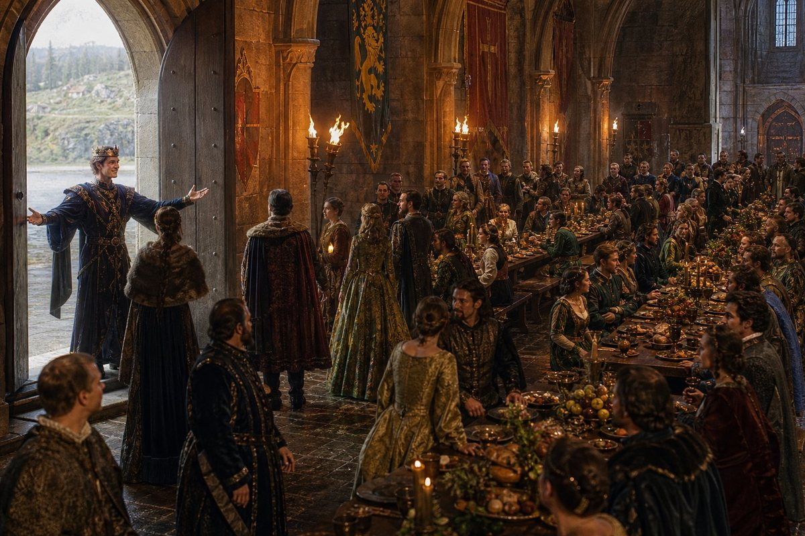
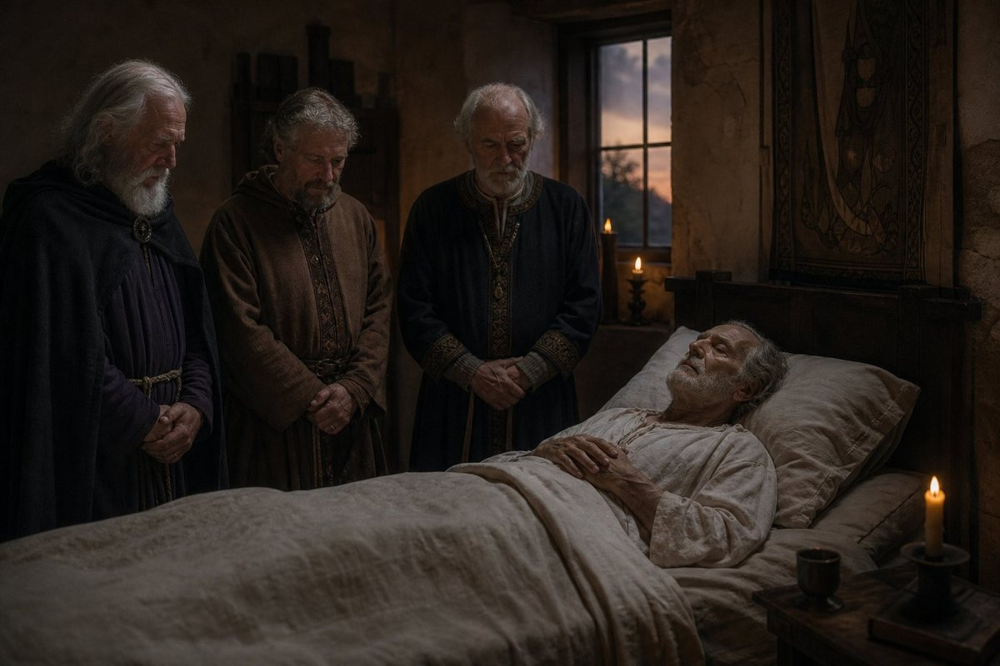

The twentieth day of the fourth month
On the twentieth day of the fourth month of 930, a man called Ekbert declared the Franconian Chalcedonian Uprising.

I am going to count the Chalcedonian risings for the reader, because I am the one who counts and because the number is now four.
The first was Heilwich's, in the fourth month of 908, when I was not born and my father was still the Duke of Bavaria. The second was Willichin's, in the first month of 921, when I was eight and the King was nineteen and the peasant war was still running. The third was Dietrich's, in the third month of 923, for Bohemia. And now the fourth is Ekbert's, in the fourth month of 930, and the King is twenty-seven and I am seventeen and the realm is one hundred and five counties.
Four risings in twenty-two years. Three of them under the King, and one under his father. All four against the same church, and all four from inside the realm. The record gives me the name of each leader and the date the rising began and the date it ended, and it does not say what any of them wanted beyond the thing they wanted and did not get.
Ekbert is a Franconian. The record gives him a name, a date, and the word uprising, and nothing else. He is the fourth leader of a Chalcedonian rising in this book and the fourth to lose.
The thirtieth day of the fourth month
On the thirtieth day of the fourth month of 930, ten days after Ekbert's rising began, Dobroslav died.

He was King of Great Moravia. My father imprisoned him in the year 916, when I was four years old. He was released — the record does not say when or by whom or why — and he went back to his country and lived there, and on the first day of the second month of 930 he became a vassal of my brother, and on the thirtieth day of the fourth month he died, falling.
Falling. The record's word. I have read it twenty times and I am going to put it down as it is, because it is the only word the record gives and it is a word that means what it means.
He was the first King of Great Moravia to be imprisoned in this book. My brother is the second King of Great Moravia to be imprisoned in this book — Dušan, on the twenty-ninth day of the first month of 930. And the man who imprisoned the first King of Great Moravia was my father, and the man who took his vassalage was my brother, and the man who died a vassal of the son of the man who imprisoned him is the man the record calls, on two dates, King of Great Moravia.
I am not going to write more about Dobroslav than that, because the record gives me two dates and a manner of death and does not fill the fourteen years in between, and I am not going to fill them either.
The eleventh day of the fifth month
On the eleventh day of the fifth month of 930, Euktemon died.

He died suddenly, of a minor illness, on the march. The record gives the date, the manner, and the place — on the march — and it gives the man.
Euktemon was Count of Ansbach since 911. He had led the pledges of loyalty in 920, when the King was thirteen and the old lords came to Regensburg and swore. He was in the company. He was the man my mother trusted to lead a hunt — I have read that page — and he was the man my brother sent ahead on the road when the army moved.
His three counties pass to three heirs. Plangon gets Nördlingen. Euthalia gets Hohenlohe. Demostrate gets Ansbach. Three counties to three people, and one man's place in the book ends on the eleventh day of the fifth month of 930.
I have his name in the roll I have been keeping since Laurentios put the pen down. I counted the men and women of the company at the beginning of this volume and I have been counting them since, and Euktemon was in the count and now he is not, and the three who replace him are names I have not written before in this book.
The fifteenth day of the sixth month
On the fifteenth day of the sixth month of 930, the King fought at Würzburg.

The numbers: eight thousand three hundred and thirteen of ours against four thousand and twenty-nine of the enemy's. One hundred and thirty-two of ours killed. Four thousand and twenty-nine of theirs — which is the number of the whole enemy army.
The whole enemy army was destroyed. The record gives the number four thousand and twenty-nine on both sides of the ledger — once as the force and once as the loss — and I have read it and I am going to put it down as the record puts it, because the record does not say "annihilated" and does not say "routed" and does not say "destroyed," and I am the one who counts and the count is this: every man Ekbert brought to the field is either dead or taken, and the number is four thousand and twenty-nine.
This is the largest army either king led in the record. My father's largest was at Lengenfeld in 907 — I have read that page — and my brother's largest is here, on the fifteenth day of the sixth month of 930, at Würzburg, and it is eight thousand three hundred and thirteen men, and one hundred and thirty-two of them are dead.
One hundred and thirty-two out of eight thousand three hundred and thirteen. One man in sixty-three. That is the cheapest victory in this book at the largest army in it, and I am going to put that down and let the reader sit with it.
The first and the tenth day of the seventh month
On the first day of the seventh month of 930, Euthykritos fought at Krapina: six hundred and sixty-two against seven hundred and seventy. The record gives the forces and does not give the losses, and I am not going to invent them.

On the tenth day of the seventh month, nine days later, the King fought at Fulda: six thousand seven hundred and eighty against seven hundred and fifty. Seven of ours killed.
Seven. Out of six thousand seven hundred and eighty. I have read that number five times and I am still not sure I have it right, and I am going to put it down as the record puts it because the record puts it down and because it is the sort of number a chancery writes when it has nothing else to write.
Seven men died at Fulda and the King won the county, and the realm was one county larger on the eleventh day of the seventh month than it had been on the tenth.
The tenth day of the eighth month
On the tenth day of the eighth month of 930, the King fought at Siegen, against Udo.

Udo is not an enemy of the record's making. He came in with Hesse in 924 — Marburg and Nassau under Friedrica and Udo — and he has been a vassal of the realm for six years. Now he is on the wrong side of a battle, and the King is fighting him.
The record gives no forces and no losses for Siegen. It gives the date, the place, the commander on both sides, and the word against. That is all.
The sixteenth day of the eighth month
On the sixteenth day of the eighth month of 930, the rising was beaten.

And on that day, or on the day nearest it that the record keeps, the King imprisoned seven of his own lords.
Ladislav, of Modruš — the man who hosted the wedding at Modruš in 924, who called his own wife a cur in public and then fell in love with her at first sight, who sneaked out of a banquet to talk with Slavich of Usora and became his friend.
Pribina. Spitihnev. Predslav. Zvonimír. Four of the five Moravian lords who became vassals on the first day of the second month of 930 — four of them, in chains, inside their own first month of vassalage.
And Udo and Friedrica, who came with Hesse in 924.
Seven lords. His own vassals. Men he had taken as vassals, fed at his table, counted in his realm. And he imprisoned them, and he did not execute them, and the record gives me the number seven and the date and does not say what any of them thought when the guards came.
My father's rule. He imprisons and never executes. Thirteen prisoners in this stretch of the book — four in 921, Pribunja in 928, Dušan and five others in 930 — and not one of them has been put to death.
The twenty-third day of the ninth month
The feast at Wien began in the ninth month of 930 and ran to the second month of 931. On the twenty-third day of the ninth month, Prince Chairestratos stood at the door and welcomed the guests.

Chairestratos is my brother. He is twenty-six. He is a drunkard and an adulterer and a Witch by the record's own words, and he is the man my brother put at the door of the feast.
I was not at the feast. I am in this building and the feast is at Wien and I have counted the days — one hundred and thirty-two — and I have read what the record gives about it, which is the name of the prince who welcomed the guests and the date, and nothing about what was said or what was eaten or what was argued.
The second day of the twelfth month
On the second day of the twelfth month of 930, Slavac died.

He died of old age, at sixty-five. He was of the company — the record's phrase for the men and women who came out of the north with Edouinos in 879 — and he was the last living walker of the road to Rome in 908, besides the King.
The road to Rome. The ninth month of 908. My father was twenty-one and he walked from Regensburg to Rome and back, and the men who walked with him are dying now, one by one, in the ninth month of 923 for Germano, in the tenth month of 928 for Laurentios, and now in the twelfth month of 930 for Slavac.
I have counted them. Germano, Laurentios, Slavac. Three of the walkers of the 908 road are dead, and the fourth is the King, who is twenty-seven.
The first day of the first month of 931
On the first day of the first month of 931, two things happened.
My half-brother Lealdo and my brother Lysistratos became champions. And Württemberg and Zollern came into the realm, under Liutbert, bringing the count to one hundred and seven.
One hundred and seven counties. The realm was at eighty-eight on the fifteenth day of the eighth month of 922, when my brother was fourteen and my father was alive. It was at one hundred and five on the fourth day of the third month of 930, when I ended the last chapter. It is at one hundred and seven now.
Nine counties in eight years. Four wars of conquest. Four Chalcedonian risings, all beaten. Two Kings of Great Moravia imprisoned. Seven lords in chains. And a realm that is, by the record's own count, the sixth largest of five hundred and ninety-nine.
I am going to write the four subjects again, because I wrote them at the end of the last chapter and I am the one who counts and the count has changed.
The first subject is Edouinos' last years and death, and it is closed. He died on the twenty-eighth day of the sixth month of 920. I was seven. I do not remember the day.
The second subject is the rise of Antiphates, and it is not closed. He is twenty-eight now. He has declared four wars of conquest and won all four. He has beaten four Chalcedonian risings. He has taken the realm from eighty-eight counties to one hundred and seven. He is August. He is Aggressive Attacker. He is Mystic and Prolific Pilgrim and Hunter and Confider and Conqueror and Religious Scholar. He is my brother.
The third subject is the rebellion war, and it is not closed. Four Chalcedonian risings — 908, 921, 923, 930 — and a peasant war of four hundred and fifty days, and a war in Croatia that cost a thousand and nineteen dead at Križevci, and a war for Hesse that cost two thousand and forty-one dead at Diez and Siegen combined. The men who refused the pledges of 920 are alive and in the world: Bohodar in Hungary, Adalhard in Trier, Ludwig the Black a disgraced count, Wilbert nothing, and seven lords in chains in the ninth month of 930.
The fourth subject is the precarious kingdom, and this is the one I am least qualified to write and I am going to write it anyway, because I am the fifth hand and this is what I see from the inside of the household.
One hundred and seven counties. A border with the Roman empire since the first day of the third month of 926. A church that has not changed its mind and four risings to prove it. Counties in the hands of children. A war in Croatia for two counties and a thousand and nineteen dead in one day. A war for Hesse that cost two thousand and forty-one dead. A feast at Wien that ran one hundred and thirty-two days and whose host is a drunkard and an adulterer. A treasury I cannot see. A Queen who has borne five children in seven years. A daughter called Sophe, four more whose names are in the book and nothing else, and a son called Nikanor who was born in the twelfth month of 929 while his father was at war.
Does it hold? I do not know. I am seventeen and I have been in this building all my life, and the thing I can tell the reader that no earlier hand could is what it looks like from the inside of a household: it looks like a family that has been given a very large estate and a set of obligations, and that is run on credit, favours, marriages, the memory of one dead king who could do everything, and the willingness of a great many people to come when they are called and be seen to come.
Here ends the second chapter of the sixth volume, at Regensburg on the first day of the first month of the year of grace 931, in the hand of Philostrate, born in this building on the thirty-first day of the eighth month of 912, daughter of Edouinos the Pilgrim and of Raina his Queen, sister of Antiphates who is the King, seventeen years old, the fifth hand to hold the pen, who has counted the counties and the dead and the children and the days, and who is going to write the next chapter because there is one more to write.